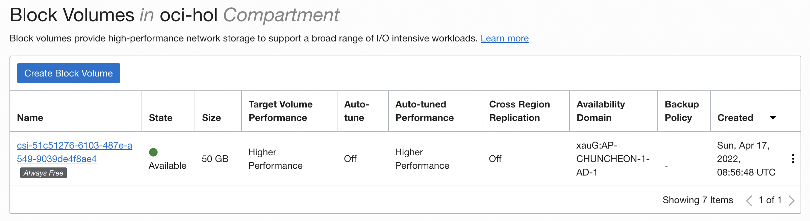
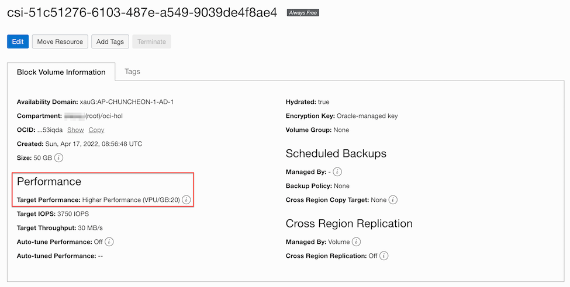
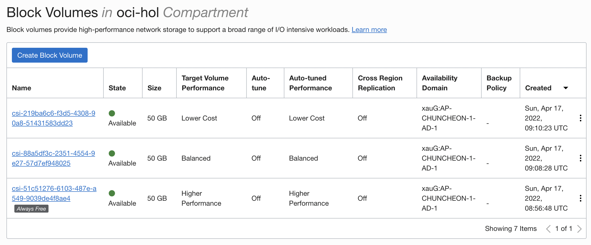

Support for PVC block volume performance levels
Persistent Volume으로 Block Volume으로 사용할 때 Lower Cost, Balanced 또는 Higher Performance로 성능레벨을 지정할 수 있습니다.
Block Volume 성능 레벨
Block Volume의 성능은 volume performance units (VPUs)으로 표현되며, 가능한 옵션은 다음과 같습니다.
- Ultra High Performance: 최고 성능을 요구하는, 가장 높은 I/O를 요구하는 워크로드에 권장합니다. 이 옵션을 사용시 매월 GB당 30 - 120 VPU을 구입할 수 있습니다. 볼륨 사이즈에 따른 처리량 및 IOPS 성능 수치는 다음 링크를 참조하세요.
- Higher Performance: Ultra High Performance 성능까지는 아니지만, 높은 I/O를 요구하는 워크로드에 권장합니다. 이 옵션을 사용시 매월 GB당 20 VPU을 구입할 수 있습니다. 볼륨 사이즈에 따른 처리량 및 IOPS 성능 수치는 다음 링크를 참조하세요.
- Balanced: Block Volume과 Boot Volume의 기본 성능 레벨입니다. 일반적인 워크로드에 성능, 비용을 고려하여 균형잡힌 선택을 제공합니다. 이 옵션을 사용시 매월 GB당 10 VPU을 구입할 수 있습니다. 볼륨 사이즈에 따른 처리량 및 IOPS 성능 수치는 다음 링크를 참조하세요.
- Lower Cost: 스트리밍, 로그 처리, 데이타 웨어하우스 같은 순차처리 I/O을 가진 워크로드에 권장합니다. 스토리지 비용만 있으며, 추가적인 VPU 비용이 없습니다. 이 옵션은 Block Volume에만 가용한 옵션이며, Boot Volume에서는 선택할 수 없습니다.
Block Volume을 Persistent Volume으로 사용시 성능 레벨 지정하기
Block Volume CSI 볼륨 플러그인(provisioner: blockvolume.csi.oraclecloud.com)을 사용하는 경우 Storage Class에서 성능레벨을 추가적으로 설정할 수 있습니다.
- Lower Cost 성능 레벨: vpusPerGB: 0
- Balanced 성능 레벨: vpusPerGB: 10
- Higher Performance: 성능 레벨: vpusPerGB: 20
기본 Storage Class 조회
- OKE 클러스터를 생성하면, 기본으로 두개의 Storage Class가 만들어져 있습니다. oci-bv가 Block Volume CSI 볼륨 플러그인을 사용하고 있으면, vpusPerGB이 따로 설정되지 않아, 기본값인 vpusPerGB: 10에 해당합니다.
$ kubectl get sc NAME PROVISIONER RECLAIMPOLICY VOLUMEBINDINGMODE ALLOWVOLUMEEXPANSION AGE oci (default) oracle.com/oci Delete Immediate false 4d oci-bv blockvolume.csi.oraclecloud.com Delete WaitForFirstConsumer true 4d
VPU를 설정한 Persistent Volume 사용하기
-
Storage Class를 생성합니다. 예) vpusPerGB: 20
- csi-bvs-sc-higher-perf.yaml
apiVersion: storage.k8s.io/v1 kind: StorageClass metadata: name: oci-bv-higher-perf provisioner: blockvolume.csi.oraclecloud.com parameters: vpusPerGB: "20" reclaimPolicy: Delete volumeBindingMode: WaitForFirstConsumer allowVolumeExpansion: true -
PVC를 생성합니다.
- csi-bvs-pvc-higher-perf.yaml
apiVersion: v1 kind: PersistentVolumeClaim metadata: name: csi-bvs-pvc-higher-perf spec: storageClassName: "oci-bv-higher-perf" accessModes: - ReadWriteOnce resources: requests: storage: 50Gi -
테스트를 위한 앱을 배포합니다.
- nginx-deployment-bvs-pvc-higher-perf.yaml
apiVersion: apps/v1 kind: Deployment metadata: labels: app: nginx-bvs-pvc-higher-perf name: nginx-bvs-pvc-higher-perf spec: replicas: 1 selector: matchLabels: app: nginx-bvs-pvc-higher-perf template: metadata: labels: app: nginx-bvs-pvc-higher-perf spec: containers: - name: nginx image: nginx:latest volumeMounts: - name: data mountPath: /usr/share/nginx/html volumes: - name: data persistentVolumeClaim: claimName: csi-bvs-pvc-higher-perf -
실행 예시
winter@cloudshell:~ (ap-chuncheon-1)$kubectl apply -f csi-bvs-sc-higher-perf.yaml storageclass.storage.k8s.io/oci-bv-higher-perf created winter@cloudshell:~ (ap-chuncheon-1)$kubectl apply -f csi-bvs-pvc-higher-perf.yaml persistentvolumeclaim/csi-bvs-pvc-higher-perf created winter@cloudshell:~ (ap-chuncheon-1)$ kubectl apply -f nginx-deployment-bvs-pvc-higher-perf.yaml deployment.apps/nginx-bvs-pvc-higher-perf created winter@cloudshell:~ (ap-chuncheon-1)$ kubectl get sc NAME PROVISIONER RECLAIMPOLICY VOLUMEBINDINGMODE ALLOWVOLUMEEXPANSION AGE oci (default) oracle.com/oci Delete Immediate false 4d1h oci-bv blockvolume.csi.oraclecloud.com Delete WaitForFirstConsumer true 4d1h oci-bv-higher-perf blockvolume.csi.oraclecloud.com Delete WaitForFirstConsumer true 35s winter@cloudshell:~ (ap-chuncheon-1)$ kubectl get pvc NAME STATUS VOLUME CAPACITY ACCESS MODES STORAGECLASS AGE csi-bvs-pvc-higher-perf Bound csi-51c51276-6103-487e-a549-9039de4f8ae4 50Gi RWO oci-bv-higher-perf 29s winter@cloudshell:~ (ap-chuncheon-1)$ kubectl get pod NAME READY STATUS RESTARTS AGE nginx-bvs-pvc-higher-perf-6495bcdf45-xzc2j 1/1 Running 0 5m23s spring-boot-hello-6865775b89-gzx4w 1/1 Running 0 3d3h -
실행결과 생성된 Block Volume 확인
실제 생성된 Block Volume을 오라클 클라우드 콘솔에서 확인해 보면, VPU: 20의 Higher Performance로 생성된 것을 볼 수 있습니다.


-
vpusPerGB:0의 Lower Cost와 vpusPerGB:10인 기본 Storage Class인 oci-bv를 사용해도, 각각 관련 VPU의 Block Volume이 생성되는 것을 알 수 있습니다.
winter@cloudshell:~ (ap-chuncheon-1)$ kubectl get sc NAME PROVISIONER RECLAIMPOLICY VOLUMEBINDINGMODE ALLOWVOLUMEEXPANSION AGE oci (default) oracle.com/oci Delete Immediate false 4d2h oci-bv blockvolume.csi.oraclecloud.com Delete WaitForFirstConsumer true 4d2h oci-bv-higher-perf blockvolume.csi.oraclecloud.com Delete WaitForFirstConsumer true 29m oci-bv-lower-cost blockvolume.csi.oraclecloud.com Delete WaitForFirstConsumer true 15m winter@cloudshell:~ (ap-chuncheon-1)$ kubectl get pvc NAME STATUS VOLUME CAPACITY ACCESS MODES STORAGECLASS AGE csi-bvs-pvc Bound csi-88a5df3c-2351-4554-9e27-57d7ef948025 50Gi RWO oci-bv 17m csi-bvs-pvc-higher-perf Bound csi-51c51276-6103-487e-a549-9039de4f8ae4 50Gi RWO oci-bv-higher-perf 29m csi-bvs-pvc-lower-cost Bound csi-219ba6c6-f3d5-4308-90a8-51431583dd23 50Gi RWO oci-bv-lower-cost 15m
이 글은 개인으로서, 개인의 시간을 할애하여 작성된 글입니다. 글의 내용에 오류가 있을 수 있으며, 글 속의 의견은 개인적인 의견입니다.